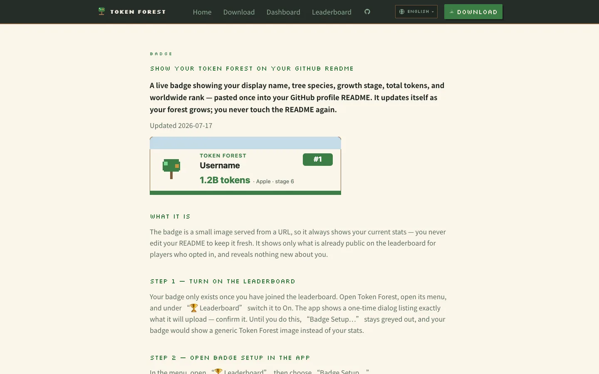
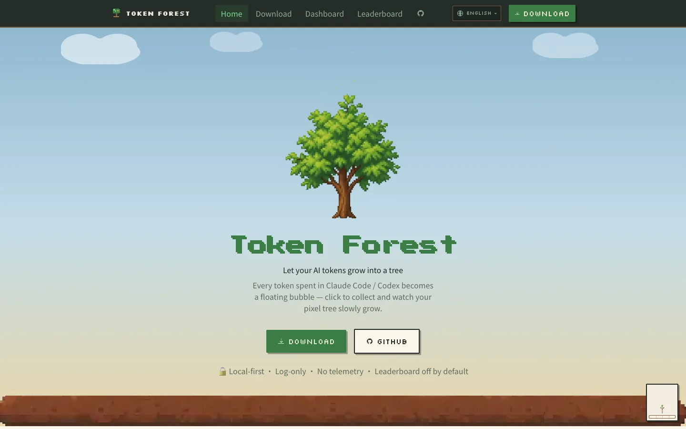

EMVALUE / Website case study
Case study: the Token Forest website
Token Forest is a pixel-art desktop app published by Poietic Studio, a studio both of us are part of. We designed and built its website, tokenforest.com.au.
1. An official home for the app
Token Forest is available for Windows and macOS. Its public introduction describes turning the tokens spent with Claude Code and Codex into a growing pixel tree. The website brings that introduction together with downloads and a global leaderboard, giving visitors a place to learn about the app and find its public information.
Our work covered the official website: its pages, visual design, languages and public data features.
2. The pages we built
The product introduction leads to a dedicated download page. The global leaderboard has multiple views, and players have public pages for their forest and standing. Together, these give the site information beyond a single promotional page: visitors can read about the product and explore its public activity.
A README badge page explains the embeddable badge images available to players who choose to join the leaderboard. Privacy, terms and security pages sit alongside the product information. These public explanations are part of the website, so people can find them without relying only on the short introduction.

3. A pixel-garden visual language
The website uses a pixel-garden style with real pixel assets. Trees, the garden palette and pixel lettering connect the product introduction with the other public pages. The homepage screenshot shows how that visual language presents the app, while the badge-page screenshot shows the same identity within a practical explanation.

4. Four languages and topic pages
English, Chinese, Japanese and Korean each have their own website addresses. The site selects a language from the browser preference, with a language control for visitors. The screenshots show the English version.
The site also includes search-oriented topic pages, including Claude Code costs, usage limits and Codex usage tracking. Those pages explain related questions in separate places rather than putting every topic into the product homepage.
5. Public data and voluntary participation
Leaderboard data is provided through Supabase using Postgres. Players choose whether to join the leaderboard; the public website explains that choice. Player pages and embeddable badges give the public information another presentation.
6. What this illustrates for a business website
A website can combine several languages, pages backed by data, shareable content and clear privacy information within one visual identity. Token Forest shows that combination on its own official site. For another business, the useful starting point is which of those capabilities serves a real customer task, rather than copying the app’s subject or assuming the same feature list is needed.
The website uses Next.js with the App Router and TypeScript, Tailwind CSS for its visual styling and next-intl for the language structure, and is deployed on Netlify. For a new project, the platform is chosen after its own assessment.
7. Visit the official website
Explore the official website to see its introduction, language switching, download information and public pages. The link below goes to tokenforest.com.au.
Related pages
Discuss a website with a similar scope
Tell us which languages, public pages or data features your website needs. We can discuss that scope and prepare a written proposal.
emvalue.studio@gmail.comLast updated: 2026-10-07